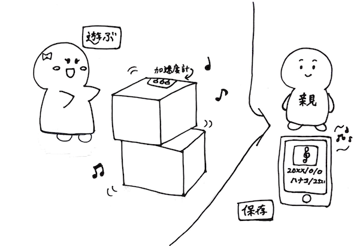

IoTプロトタイプ
＜商品名＞
『おとつむつむ』
（イラストはイメージです）byいらすとや
＜ターゲット＞
親子
＜キャッチコピー＞
「遊びが音になる」
＜商品説明＞
積むと音がなり、積み木で遊ぶような感覚で曲を作って楽しめるおもちゃです。
作った曲は、専用アプリで保存し、残すことができるので、いつでも聴けます。
＜システム構成＞

＜プロトタイプ説明＞
今回作ったプロトタイプでは、ブロックを傾けて
決まった音を鳴らすところまで制作することができました。
仕組みとしては、四角形の面に加速度計をつけて、面の傾きで変化する値ごとに、音を指定しています。
＜デモ映像＞
＜アップデートポイント＞
土曜のレビューでは、「ド」の音のブロックしかなかったのですが、
新たに「レ」と「ミ」の音が鳴るブロックをつくりました。
試しに曲も演奏してみました。
『おとつむつむ』で演奏してみた